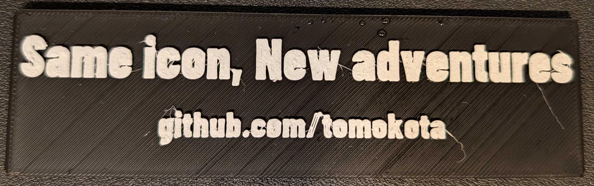
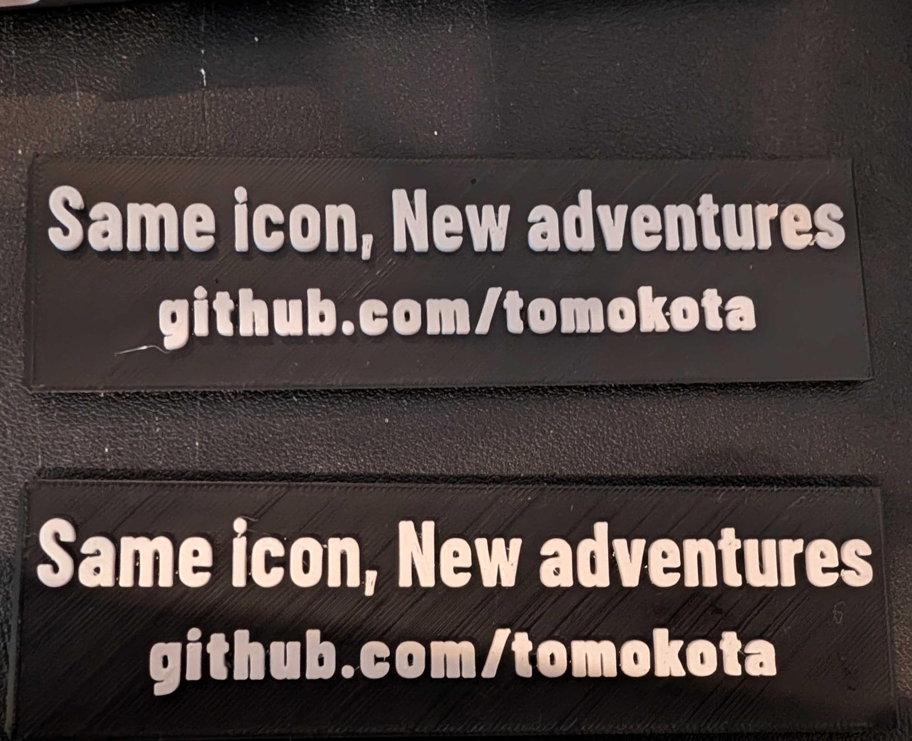
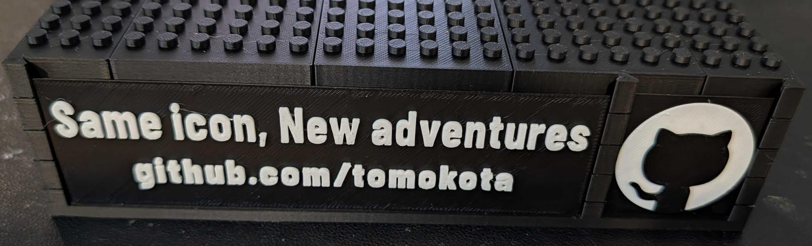
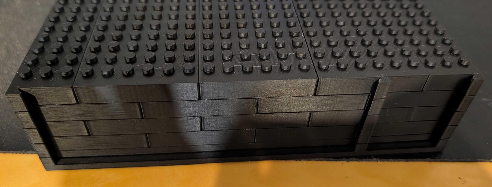
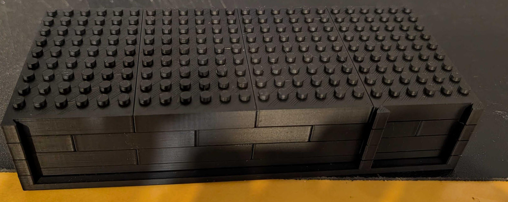

Bの制作記録 — 文字の試作から、土台と前面まで
2026-09-23、「土台が組み上がりました」との報告が届きました。 黒い台座、前面の空き溝、右ロゴを入れた状態、2行の個人銘板と右ロゴがそろった状態を、 ユーザー提供の実写真で記録します。ここまでの実制作の節目であり、 顔・ゴーグル・150部品すべての完成写真ではありません。
写真は掲載許可を得て、向きと切り取りを整え、元のメタデータを除去したものです。 造形の欠点・部品の段数・装着状態を変える合成はしていません。 以下の日付は報告日です。撮影日時や撮影順は未確定で、 別角度の写真がすべて別の工程・別の日を表すとは限りません。
ここまでの流れ
| 報告日 | 本人の報告・写真で確認できること | 設計変更・未確認事項 |
|---|---|---|
| 2026-09-22 | 文字が小さく、隙間が狭くて印刷しにくそうとの相談。白文字の糸や表面の荒れも見える。使用ノズルは本人回答で0.2 mm | 2行を維持する方針で改訂。写真だけから流量・温度・乾燥状態の原因や補正値は決めていない |
| 2026-09-23 12:09 | 銘板2枚の写真と「いけているみたい」との報告 | 改訂後の試作についての手応えとして記録。2枚の旧・新版対応、STLや実スライスの版・hashは未照合 |
| 2026-09-23 12:18 | 「土台が組み上がりました」との報告。積層・継ぎ目・前面部品を取り付けた台座が写っている | 取付状態の写真はあるが、接着の有無、保持力、実測寸法、着脱回数、荷重・転倒の評価結果は未提供 |
1. 最初の文字試作で、余裕の少なさが見えた

報告日：2026-09-22。 2行の銘板を実際に作ったことで、 画面の見え方だけでは分かりにくかった文字内の孔・字間・表面の状態を確認するきっかけになりました。 0.2 mmノズルという情報は、この相談時の本人回答です。他の写真すべての印刷条件を示すものではありません。
その後、ユーザーは2行を維持し、下段を少し大きく、上段の孔に余裕を持たせ、 白い文字を厚くする方針を選びました。採用した設計は 上段12 mmを維持、下段8→10 mm、白の浮彫0.8→1.2 mm、黒2.4 mmと取付け基材は不変です。 これは設計の値で、写真から現物を測った結果ではありません。
2. 改訂後、銘板の試作について手応えの報告

報告日：2026-09-23。本人の言葉：「いけているみたい」。 2枚の実物が並んだ写真と、制作が進められそうという手応えが届きました。 上・下のどちらを旧版／新版と呼べるかは未照合なので、断定ラベルは付けません。 この報告を、特定のSTL版の印刷合格や、糸引き・表面荒れの完全解消とは扱いません。
3. 黒い台座の積層・継ぎ目と、前面の空き領域

報告日：2026-09-23。 台座の積層と継ぎ目、上面のスタッド、 前面部品を入れる領域が見える写真です。 「ファイルを印刷する」から「台座の形に組む」へ進んだ様子が分かります。 写真から正確な段数・部品数・クリアランス値を補ってはいません。 設計上の5段・台座19個は組立手順の値として区別します。
4. 右側のロゴが入った状態

報告日：2026-09-23。 右側のロゴ部品が入った状態を確認できます。 左の銘板領域は空いています。掲載順は組み方を理解しやすい順であり、 この写真が他の写真より先に撮影されたという意味ではありません。 差し込む操作、必要な力、保持力、何回着脱できたかは写っていません。
5. 個人銘板と右ロゴを取り付けた土台へ

報告日：2026-09-23。本人の言葉：「土台が組み上がりました」。 前面に2行の個人銘板と右ロゴがそろった状態です。 今回は台座と前面部品の実制作マイルストーンとして記録します。 写真だけで無接着を証明したり、keeperの保持・分解耐久・完成模型の安定性が合格したとは言いません。 顔・ゴーグル・完成150部品全体の制作写真は、まだ提供されていません。
補足ギャラリー — 同じ進捗の別角度も含む
台座の上面・側面・前面を、あと4枚で見る

上面側。報告日：2026-09-23。 スタッドと継ぎ目を確認できます。寸法・段数の実測記録ではありません。

側面側。報告日：2026-09-23。 同じ進捗を別角度から写した可能性があります。未撮影の組立操作を補う写真ではありません。

前面の詳細。報告日：2026-09-23。 継ぎ目と取付け領域が見えます。写真の画素から嵌合公差は算定しません。

前面全景。報告日：2026-09-23。 前面部品が入っていない状態です。写真の番号・掲載順は撮影時刻の順番を保証しません。
学びと、次に残る確認
実物の文字相談から設計を見直し、その後に手応えの報告と台座・前面の写真が届いた、 という制作の流れを残しました。一方、設計改訂がどの造形上の問題をどれだけ改善したかは、 使用データ・スライス条件・実測値をそろえてから判断する必要があります。
| 実制作の確認として追加したこと | まだ未確認のこと |
|---|---|
| 銘板試作の写真と本人の改善感の報告 | 各現物とSTL／3MFのrevision・hash対応、設定入りBambu Studioプロジェクト |
| 台座の積層・継ぎ目・前面領域が見える写真 | 現物の正確な寸法・公差、写真すべてのノズル／PLA／plate／profile |
| 右ロゴ、個人銘板と右ロゴを取り付けた台座の写真 | 接着の有無、挿入力、keeper保持力、着脱回数、荷重・転倒評価 |
| 土台が組み上がったという本人報告 | 顔・ゴーグル・完成模型全体の写真、全150部品の組立完了 |
この制作記録の追加で、STL・3MF・native・150配置や、黒→白の境界を変更していません。 配布データは引き続きNOT_SLICEDです。写真付きの制作記録と、正式な物理検証の合否は別に扱います。 作業を進める際は印刷手順・少量試作・組立手順を参照し、 強い力、白化・割れ、着座不良や保持不足があれば止めてください。
写真の取扱い
写真の権利はユーザーに帰属します。今回の掲載許可は、モデル・フォント・ソフトウェアのライセンスを 写真へ自動適用したり、第三者へ包括的な再利用権を与えたりするものではありません。 この個人版には許可された銘板の文字を残し、無関係な背景を可能な範囲で切り取っています。 2026-09-23の追加承認により、個人版repoとこの案内ページも公開対象になりました。 一般向けrepoの伏字画像とは別系統です。加工前の原画像・EXIF・監査元パスは公開しません。
このページに含むのは加工済みの実写真9枚です。元ファイル名・EXIF・位置・カメラ情報、 加工前の原画像、監査用の元パス対応表は収録していません。 画像一覧と加工範囲には、 中立ID・報告日・寸法・配布画像のhash・回転／切り取り／メタデータ除去の範囲など、 配布用の情報を記録しています。 写真のスライドショーを実組立動画と称していません。